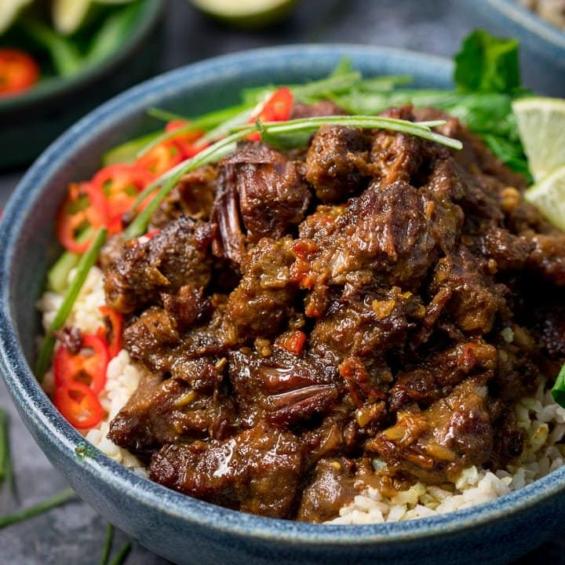

Rendang is mostly available in restaurants serving West Sumatra’s Padang cuisine. These Padang restaurants are ubiquitous in Indonesia, thanks to the merantau (migrating) culture of Minangkabau. This is where men tend to leave their hometowns to work in other cities or even other countries. They introduced rendang and popularized Padang food across Indonesia and in neighbouring countries like Malaysia, Singapore, Thailand and parts of The Philippines.
Rendang is a meat dish, slow-cooked in spices and coconut milk. The most popular rendang is undoubtedly made with beef. But other proteins such as poultry, fish and even vegetables can be used, according to your tastes.
To cook chicken:
Tip: During the final cooking process, if the meat is tender but still has a lot of liquid, continue cooking, slightly opening the lid of the pot to let the liquid reduce.